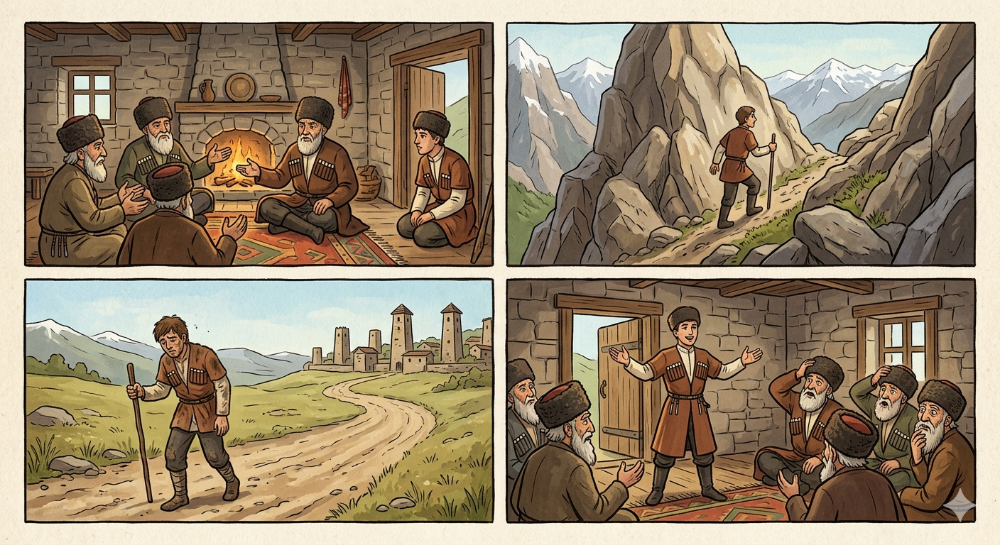

И.А. Дахкильгов. Хьехаме дувцарш - поучительные рассказы-притчи.
И.А. Дахкильгов. Хьехаме дувцарш - поучительные рассказы-притчи. Из ингушского фольклора.

Лоам ваха найц
УццӀаьшка вена, цар дувцачунга ладогӀаш вагӀаш хиннав цхьа найц. Дувцо-ош багӀаш, воккхагӀчо аьннад: - ХӀаьта, воаех цаӀ лоам ваха веза… Кхоачаш из аьнна валалехьа, хӀама ца оалаш, гӀетта ара а ваьнна, нейц дӀавахав. Кхоно-о, цхьа кӀира даьннача гӀолла, юхавенав. УццӀаьша а кхычар а хаьттад: - Ва, мича лийнав хьо? Фу леладаьд Ӏа? - Яьъ! Мича вахар яхар тов! МоллагӀа ваха а цаӀ лоам ваха веза аьлар оаш, цудухьа лоам а ваха воагӀакха со. - МалагӀча гӀулакха вода, фу де вода, ховш вахарий хьо? - Ужжамо пайданна доаца хӀамаш сона эшаш дац, тоъам ба со шун гӀулакх дӀаотта кийча хилар, - аьннад найцо. Сага ха доагӀа ше мича а фу де а водаш ва.
РУССКИЙ
Зять, сходивший в горы
Как-то сидела родня и что-то обсуждала. Невдалеке сидел и их услужливый зять. В конце беседы старший сказал: - Ну что ж, одному из нас надо пойти в горы. Молча встал зять и вышел. Где-то он пропадал целую неделю. Когда вернулся, его спросили: - Где же ты пропадал? Чем все это время занимался? - Как это так, где! Вы сказали, что кто-то один из нас должен пойти в горы. Вот я и сходил туда и вернулся. - Прежде чем пойти в горы, ты узнал, зачем и для чего надо было туда сходить? - Подобная ерунда меня не интересует. Достаточно того, что я всегда готов услужить вам, - гордо ответил зять. Конечно же человек должен знать, куда он идет и зачем.
ENGLISH
The Son-in-Law Who Went to the Mountains
One day, the family were sitting together discussing something. Their obliging son-in-law was sitting nearby. At the end of the conversation, the eldest said, ‘Well, then one of us must go to the mountains.’ The son-in-law rose silently and left. He was gone for a whole week. When he returned, they asked him, ‘Where on earth have you been? What have you been up to all this time?' 'What do you mean, where?' You said that one of us had to go to the mountains. I went there and came back.' ‘Before you went, did you find out why you had to go there and what you were supposed to do?’ ‘I’m not interested in such nonsense. It's enough that I'm always ready to serve you,' the son-in-law replied proudly. 'Of course a person must know where they are going and why.'
НОХЧИЙН
Лаьмнашка вахан нуц
Стунцхошка веан, цара дуьйцучуьнга ладугӀуш Ӏаш хилла цхьа нуц. Дуьйцу-уш бохкуш, воккхахчо аьлла: - ХӀета, вайх цхьаъ лаьмнашка ваха веза… Кхочуш иза аьлла валале, хӀумма ца олуш, гӀеттин ара а ваьлла, нуц дӀавахна. Кхано-о, цхьа кӀира даьлча, йухавеан. Стунцхоша а кхечара а хаьттина: - Ва, мичахь лелла хьо? ХӀун леладина ахьа? - Яьъ! Мичахь вахар бохург тов! Милла а вахна а цхьаъ лаьмнашка ваха веза элира аша, цундела лаьмнашка а вахна вогӀу-кх со. - Муьлхачу гӀуллакхан воьду, хӀун дан воьда, хууш вахарий хьо? - Уьш пайденна доцу хӀуманаш суна оьшуш дац, тоам бу со шун гӀуллакхан дӀахӀотта кийча хилар, - аьлла невцо. Стеган хаа догӀа ша мича а хӀун дан а воьдуш ву.
ПОГОВОРКИ